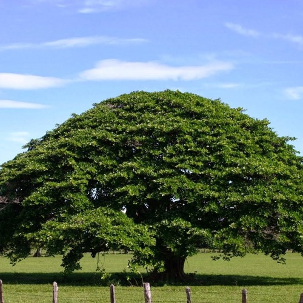

Bandera Nacional

La Bandera Nicaragüense tiene tres franjas horizontales (dos azules, arriba y abajo) con el escudo nacional en el centro, en la franja blanca. La franja blanca del Pabellón Nacional representa el territorio de la nación y simboliza la pureza de Nicaragua.
Escudo Nacional
El Escudo Nacional de Nicaragua, fue creado por decreto legislativo del 5 de septiembre de 1908: Un triángulo equilátero que encierra la figura de cinco volcanes continuos que emergen entre dos mares representando las cinco repúblicas centroamericanas
Flor Nacional
Desde las épocas precolombinas, niquiranos y chorotegas ensartaban las flores de Sacuanjoches en hilos y juntaban varias sartas para formar una verdadera cabellera o racimo de rosario de Sacuanjoches, para adornar altares y criptas funerarias. Esa forma de preparar sartas es una costumbre que aún se practica en Nicaragua.
Arbol Nacional
Este fue declarado el Árbol Nacional de Nicaragua. Es un árbol frondoso, leñoso de blancas flores, que tiene la característica de ser el primer árbol que florece en Nicaragua a mediados de Noviembre.Sus flores son el adorno tradicional de los altares de las purísimas en toda Nicaragua.
Ave Nacional

Esta colorida ave es fácilmente reconocida por su larga cola rematada por dos plumas azules. Estos se alimentan principalmente de insectos. Cavan su nido en un hoyo en la tierra, para poner sus huevos. Pueden ser vistos en los bosques de Nicaragua, principalmente al sudoeste del país.